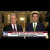

<html lang="en">
 <head>
<!-- Favicon -->
<link rel="shortcut icon" href="../../favicon.ico">
  <meta charset="utf-8"/>
  <title>
   FBI Agents Discussed "Secret Society" Within DOJ And FBI Working To Undermine Trump
  </title>
  <meta content="Post on /v/Conspiracy from 2018-01-23 by ChangingPerspectives." name="description"/>
  <meta content='FBI Agents Discussed "Secret Society" Within DOJ And FBI Working To Undermine Trump' property="og:title"/>
  <meta content="Post on /v/Conspiracy from 2018-01-23 by ChangingPerspectives." property="og:description"/>
  <link href="../../static/css/page.css" rel="stylesheet"/>
  <meta content="https://voat.conspiracy.hackliberty.org/thumbnails/17/e7/17e70549-086c-4de2-9963-15d9c18b5856.jpg" property="og:image"/>
  <meta content="https://voat.conspiracy.hackliberty.org/v/conspiracy/2354914.html" property="og:url"/>
  <meta content="width=device-width, initial-scale=1" name="viewport"/>
  <link href="https://voat.conspiracy.hackliberty.org/v/conspiracy/2354914.html" rel="canonical"/>
  <meta content="article" property="og:type"/>
  <meta content="Voat /v/Conspiracy Archive" property="og:site_name"/>
  <meta content="en_US" property="og:locale"/>
  <meta content="summary_large_image" name="twitter:card"/>
  <meta content='FBI Agents Discussed "Secret Society" Within DOJ And FBI Working To Undermine Trump' name="twitter:title"/>
  <meta content="Post on /v/Conspiracy from 2018-01-23 by ChangingPerspectives." name="twitter:description"/>
  <meta content="https://voat.conspiracy.hackliberty.org/thumbnails/17/e7/17e70549-086c-4de2-9963-15d9c18b5856.jpg" name="twitter:image"/>
 </head>
</html>
<body class="dark">
 <div id="container">
  <!-- array (
  'submissionid' => 2354914,
  'creationDate' => '2018-01-23 16:33:22',
  'domain' => 'thelastamericanvagabond.com',
  'formattedContent' => NULL,
  'isAdult' => 0,
  'isAnonymized' => 0,
  'subverse' => 'Conspiracy',
  'thumbnail' => '17e70549-086c-4de2-9963-15d9c18b5856.jpg',
  'title' => 'FBI Agents Discussed "Secret Society" Within DOJ And FBI Working To Undermine Trump',
  'url' => 'http://www.thelastamericanvagabond.com/top-news/fbi-agents-discussed-secret-society-within-doj-fbi-working-undermine-trump/',
  'userName' => 'ChangingPerspectives',
  'archivedLink' => NULL,
  'archivedDomain' => NULL,
  'isDeleted' => 0,
) -->
  <div style="text-align:center; font-size:24px; font-weight:bold;">
   <a href="../../index.html" style="text-decoration: none; color: inherit;">
    Voat /v/Conspiracy Archive
   </a>
  </div>
  <div class="content" role="main">
   <div class="sitetable linklisting" id="siteTable">
    <div class="submission id-2354914 link type-text" id="submission-2354914">
     <a name="submissionTop">
     </a>
     <p class="parent">
     </p>
     <a class="thumbnail may-blank" href="http://www.thelastamericanvagabond.com/top-news/fbi-agents-discussed-secret-society-within-doj-fbi-working-undermine-trump/" target="_self">
      
     </a>
     <div class="entry unvoted">
      <p class="title">
       <a class="title may-blank" href="http://www.thelastamericanvagabond.com/top-news/fbi-agents-discussed-secret-society-within-doj-fbi-working-undermine-trump/" tabindex="1" target="_self" title='FBI Agents Discussed "Secret Society" Within DOJ And FBI Working To Undermine Trump'>
        FBI Agents Discussed "Secret Society" Within DOJ And FBI Working To Undermine Trump
       </a>
       <span class="domain">
        (
        <a href="https://archive.searchvoat.co/search.php?d=thelastamericanvagabond.com">
         thelastamericanvagabond.com
        </a>
        )
       </span>
      </p>
      <p class="tagline">
       submitted
       <time datetime="2018-01-23T16:33:22+00:00" title="01/23/2018 4:33:22 PM">
        2018-01-23T16:33
       </time>
       by
       <span class="userattrs">
        <a class="author may-blank" href="https://archive.searchvoat.co/search.php?u=ChangingPerspectives">
         ChangingPerspectives
        </a>
       </span>
      </p>
      <ul class="flat-list buttons">
       <li class="first">
        <a class="comments may-blank" href="https://archive.searchvoat.co/v/Conspiracy/2354914" rel="nofollow">
         1 comment
        </a>
       </li>
      </ul>
     </div>
     <div class="child">
     </div>
     <div class="clearleft">
     </div>
    </div>
    <div class="clearleft">
    </div>
   </div>
   <div class="horizontal-line">
   </div>
   <div class="commentarea">
    <div class="sitetable nestedlisting" id="siteTable">
     <div class="child id-11721447 comment even" style="">
      <div class="entry unvoted">
       <div class="noncollapsed" id="11721447" style=";">
        <p class="tagline">
         <a class="author may-blank" href="https://archive.searchvoat.co/search.php?u=scarlettm512">
          scarlettm512
         </a>
         <span class="userattrs">
         </span>
         <time datetime="2018-01-25T02:57:48+00:00" title="1/25/2018 2:57:48 AM">
          2018-01-25T02:57
         </time>
        </p>
        <div class="usertext-body may-blank-within" id="commentContent-11721447">
         <div class="md">
          <p>
           <p>
            Here's the thing -- how do we know that Trump is one of the good guys?  Sure, he says he is -- but is he really?  Who does he surround himself with and can they be trusted?
           </p>
           <p>
            One interpretation is that Trump is the good guy, this discussion/conspiracy between the anti-Trump FBI agents shows that they are attempting to undermine him and they deleted those messages to try to cover it up.
           </p>
           <p>
            Another equally possible interpretation is that Trump is NOT one of the good guys.  These FBI agents were actually discussing his ties to people who are not America Firsters and those messages got deleted because if the actual information within those messages got out -- it would out Trump as being compromised.
           </p>
           <p>
            Which one is the correct interpretation?  Only time will tell.  If Hillary Clinton hasn't been indicted by the end of Trump's term, though, I think the answer will be pretty obvious.
           </p>
           <p>
            Let's not forget that it was members of the FBI who were investigating 9/11 hijacking subjects who were pulled off investigations or thwarted in their efforts to investigate these guys resulting in those hijackers being able to evade detection.  Maybe there is a faction of good guys in the FBI.  I just wouldn't be so quick to assume that Trump -- with his ties to Goldman Sachs and his son-in-law's business dealings with George Soros -- that Trump is on the up and up.
           </p>
          </p>
         </div>
        </div>
        <ul class="flat-list buttons">
         <li class="first">
          <a class="bylink" href="https://archive.searchvoat.co/v/Conspiracy/2354914/11721447" rel="nofollow">
           link
          </a>
         </li>
        </ul>
       </div>
      </div>
     </div>
    </div>
   </div>
  </div>
 </div>
<!-- Footer Section -->
<footer class="container-fluid mt-3">
  <p class="small mb-0">
    /v/conspiracy archive has 42504 posts and 159856 total comments.
    <a href="https://git.hackliberty.org/c0mmando/voat-conspiracy-archive/">source code</a>.
  </p>
</footer>

<script src="../../static/js/jquery-3.7.1.slim.min.js"></script>
<script src="../../static/js/comments-toggle.js"></script>

</body>
